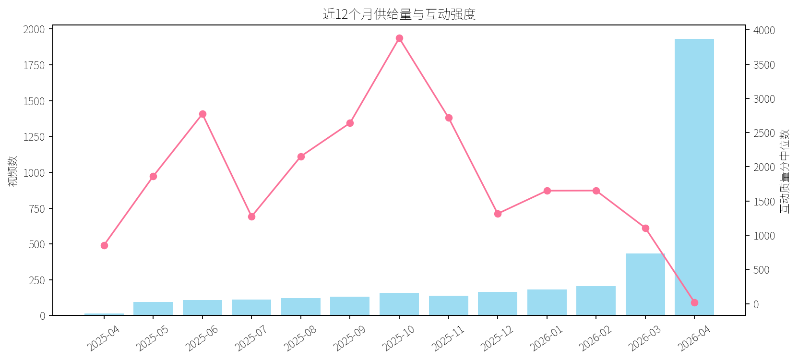
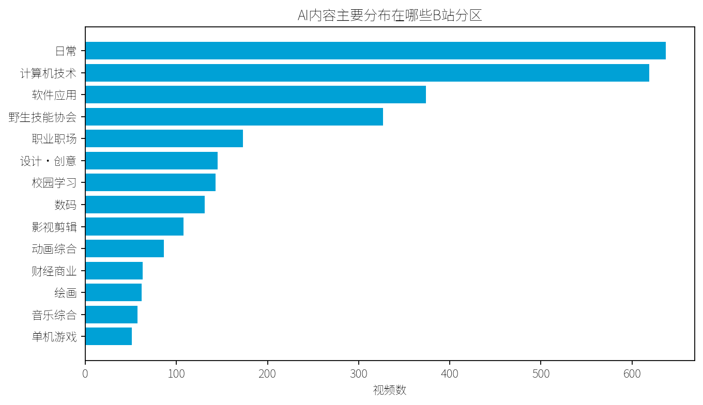
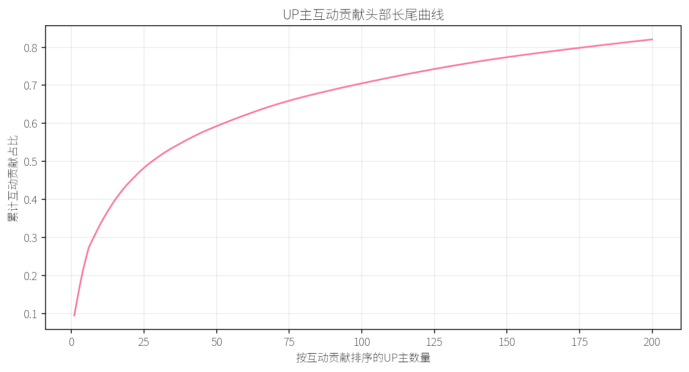
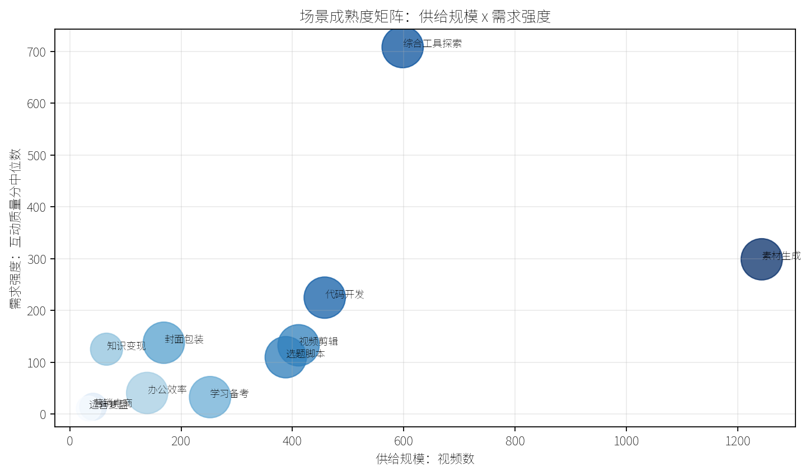
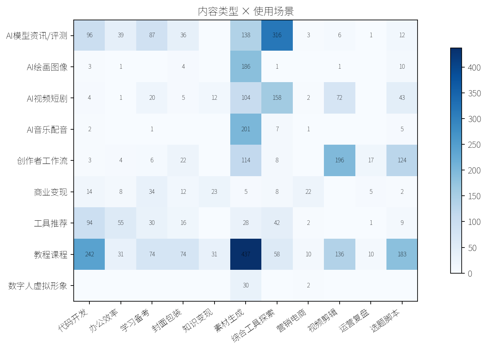
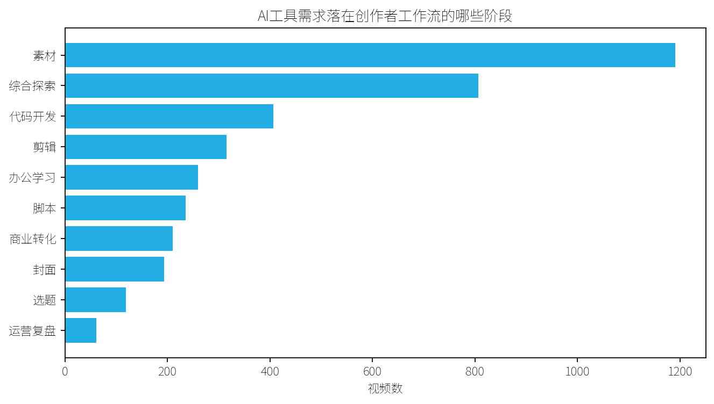
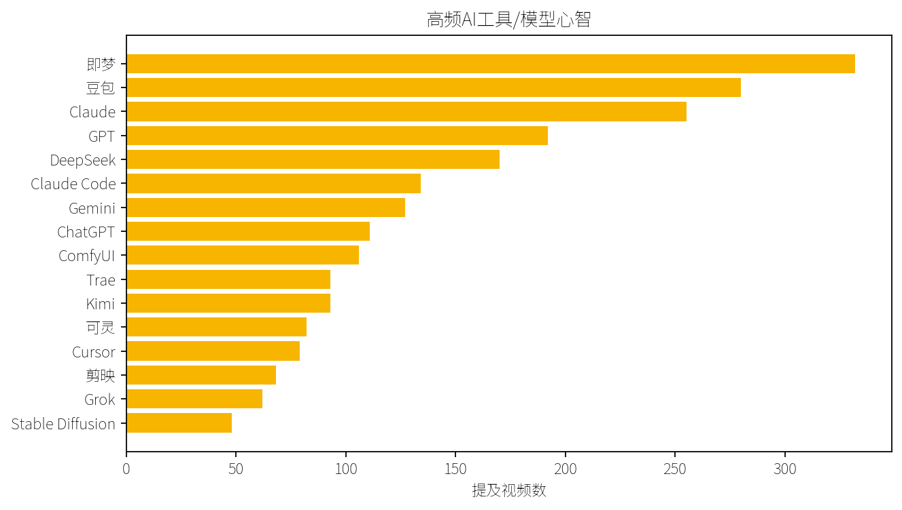
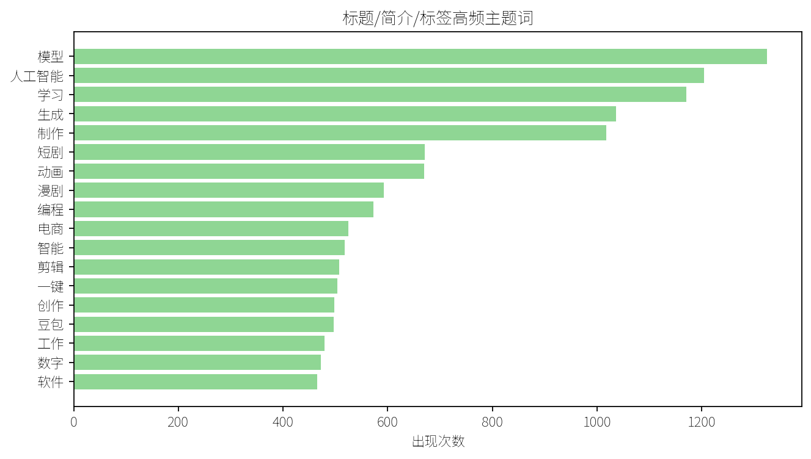
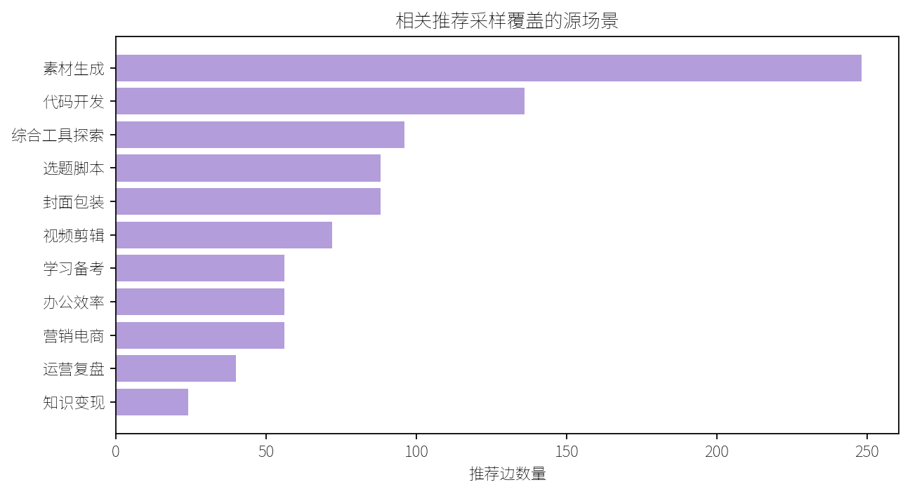

基于 3800 条近12个月公开 B站视频样本，识别内容供给、创作者工作流需求、UP主结构与平台级 AI 产品机会。
数据窗口：2025-04-24 至 2026-04-24；V1未被覆盖，V2另建数据、报告与看板。
研究问题：B站 AI 内容消费正在指向哪些创作者工作流？平台如何把“看教程/看工具”转化为“开始创作/持续投稿”？
关键词矩阵：AIGCAI绘画AI视频AI音乐AI配音AI写真数字人AI动画AI短剧AI生成AI换脸AI工具大模型ChatGPTDeepSeek豆包AIKimiClaude可灵AI即梦AICursorTraeAI剪辑AI编程AI办公AI写作AI设计AI学习AI做PPTAI脚本AI封面AI分镜AI口播AI运营AI副业AI变现AI接单AI电商AI带货
主数据源：公开搜索原始字段，包含发布时间、分区、UP主、播放、点赞、收藏、评论、弹幕、标签、简介。详情接口只对分层样本补充投币/分享等字段。
局限：评论和AI总结接口易触发 412，本报告不把评论情绪作为核心证据。
核心结论：AIGC 内容已经从“模型能力展示”进入“创作工作流迁移”阶段；B站的产品机会是把 AI 内容消费、工具教程和投稿链路连成闭环。

供给量展示生态热度，互动中位数更接近用户行动意愿。产品判断不能只看哪个关键词视频多，还要看收藏、投币、分享、弹幕等更重反馈。

AI内容不只出现在计算机技术/软件应用，也进入日常、设计创意、绘画、影视剪辑、音乐等创作型分区。这说明 AI 能力正在被普通创作者吸收，而不是只由技术型UP主生产。

Top10 UP主贡献互动占比约 33.6%。头部内容负责建立工具心智，长尾创作者负责把工具迁移到不同分区和垂类。
产品设计上，头部适合共创模板和案例库，长尾更需要低门槛工作流和投稿辅助。

成熟度综合考虑视频数、UP主数、互动中位数、教程占比和商业化占比。当前优先场景是 素材生成。

用户关心的不是“有哪些AI工具”，而是工具在选题、脚本、素材、剪辑、封面、运营复盘中的具体落点。

最高频阶段是 素材。这表明 B站 AI 产品应从创作流程切入，而不是停留在工具列表。
建议将“选题灵感、脚本草稿、素材生成、投稿复盘”作为最小闭环。

通用模型解决理解、写作、规划问题；创作工具解决图片、视频、剪辑、代码和自动化问题。B站适合做“任务到工具组合”的推荐，而不是只推荐单个工具。

高频词能帮助产品确定信息架构：用户搜索的是教程、实操、工具、生成、视频、变现，而不是抽象模型参数。

相关推荐采样用于观察用户从一个AI场景可能滑向哪些相邻内容。它适合用于“下一步学习/下一步创作”的推荐策略。
| UP主 | 类型 | 视频数 | 总播放 | 总互动 | 主场景 |
|---|---|---|---|---|---|
| DiDi_OK | 综合型UP主 | 1 | 19011872 | 4597815 | 选题脚本 |
| 漫游会议室 | 创作型UP主 | 5 | 20361425 | 2007275 | 素材生成 |
| 影视飓风 | 技术型UP主 | 2 | 11689595 | 1981690 | 综合工具探索 |
| 猫爷说道AIGC | 创作型UP主 | 1 | 7412607 | 1762183 | 选题脚本 |
| Ziwwwwwuuu | 创作型UP主 | 1 | 3550542 | 1504666 | 素材生成 |
| FayeGlide | 创作型UP主 | 1 | 3818896 | 1417940 | 素材生成 |
| 英雄哪里出来 | 教学型UP主 | 1 | 5747505 | 755884 | 素材生成 |
| AI视频教程_ | 教学型UP主 | 4 | 4048783 | 754452 | 素材生成 |
| 吟游诗人AT | 创作型UP主 | 3 | 4441490 | 750274 | 素材生成 |
| 吴恩达agentskills | 教学型UP主 | 1 | 478173 | 733529 | 代码开发 |
| 视频 | UP主 | 分区 | 类型 | 场景 | 互动 |
|---|---|---|---|---|---|
| 【牌子】当世界过分“诚实”，我们要如何保持好奇与勇气【B站AI创作大赛-开放赛道】 BV11mFLziEyP | DiDi_OK | 影视剪辑 | 创作者工作流 | 选题脚本 | 4597815 |
| 如来《Money Back My Home》MV首发激情献唱！ BV1rBCsB1E42 | 猫爷说道AIGC | MV | AI音乐配音 | 选题脚本 | 1762183 |
| 改变视频行业的AI，快来了(但有点恐怖) BV1A3cczZEf6 | 影视飓风 | 计算机技术 | AI模型资讯/评测 | 综合工具探索 | 1509940 |
| 家里的D老师突然产生了多余的情感 BV1b1t4zyEaA | Ziwwwwwuuu | 同人·手书 | AI绘画图像 | 素材生成 | 1504666 |
| 被这画风美到了，是谁把我的梦画出来了 BV1TMkYBLEf2 | FayeGlide | 日常 | AI音乐配音 | 素材生成 | 1417940 |
| 黑熊精新歌《差一点》：原来最痛的不是失败，是以为自己配。 BV1ReW1zFEtq | 漫游会议室 | 影视杂谈 | AI音乐配音 | 综合工具探索 | 975686 |
| 《直接给我生成完整代码》 BV1hx2LBCEaY | 英雄哪里出来 | 计算机技术 | 教程课程 | 素材生成 | 755884 |
| 【吴恩达】2026年公认最好的【Agentic AI】教程！大模型入门到进阶，一套全解决！Agentic AI—附带课件代码 BV1H79cBuEia | 吴恩达agentskills | 计算机技术 | 教程课程 | 代码开发 | 733529 |
| 【吴恩达】给所有人的AI课（中英字幕），新手小白入门必看的人工智能课，从入门到进阶，全程无废话！拿走不谢 BV1pH9jBDE2x | 吴恩达ノ | 计算机技术 | 教程课程 | 视频剪辑 | 649054 |
| 【LangChain全讲】从入门到实战全套教程，从底层原理出发，到项目实战全面解析【大模型|大模型应用|大模型应用开发】 BV1nDMJzbEGm | langchain教程- | 计算机技术 | 教程课程 | 封面包装 | 642739 |
| 真相，根本不值一提！ BV1gzabzwErE | 吟游诗人AT | 动画综合 | AI视频短剧 | 素材生成 | 633517 |
| 【全30集】即梦+豆包+剪映，2小时快速掌握AI视频制作技巧，手把手教你从0到1制作AI短片！小白适用！学完即接单，带你玩转AI视频赛道！ BV11NHJzTEbE | AI视频教程_ | 野生技能协会 | 教程课程 | 素材生成 | 605768 |
面向UP主的 AI 创作工作台，把 B站热点内容、工具教程、模板资产和投稿复盘连成闭环。
AI辅助后的投稿完成率；AI内容消费到创作行为转化率。
草稿生成率、建议采纳率、投稿频次、从选题到投稿耗时。
收藏率、投币率、复投率、发布后互动质量分。
MVP：先做“同分区AI选题榜 + 脚本/标题生成 + 投稿复盘”三件事，验证创作转化，再扩展到素材和剪辑工具链。
交互看板：dashboard_v2/index.html；清洗数据：data/processed_v2/videos.csv；验证摘要：data/processed_v2/validation_summary_v2.json。
复现命令：.\\.venv\\Scripts\\python.exe scripts/pipeline_v2.py --pages 14 --target 3800 --detail-target 1600 --related-samples 120
本项目只使用公开数据，不读取个人历史、收藏或关注；遇到风控会跳过并记录。